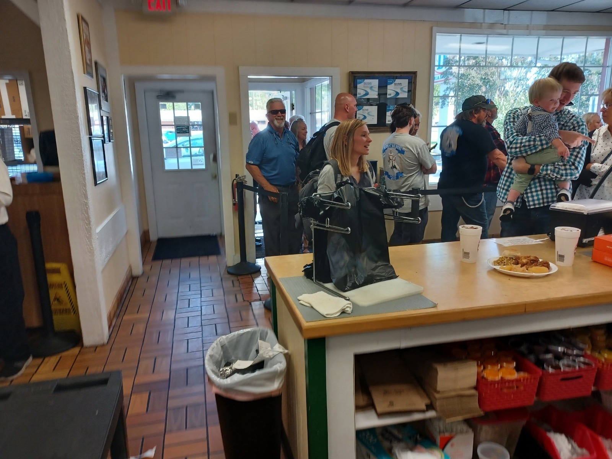
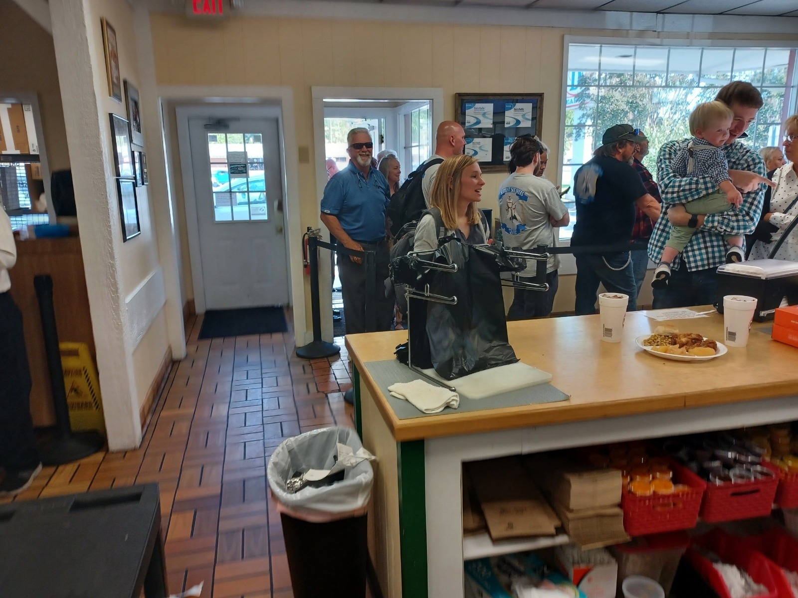

Our Story
Mountain Fried Chicken was founded in 1985 by "Chicken" Charlie Taylor in Winston-Salem, NC. Kyle Pope and Jeff Little, both avid golfers, became regulars at the Clemmons location in 2001, stopping by whenever they played nearby. Their love for the restaurant grew so much that they eventually had the opportunity to buy the Clemmons location, with Kyle taking over its management. In 2012, Kyle, his wife Rita, Jeff and Anita Little decided to move the restaurant closer to home in Hickory, NC. Since then, Kyle has been running the business, and the four owners have remained dedicated to serving the Hickory community with delicious, affordable chicken. More than just a restaurant, Mountain Fried Chicken has become a place where customers and employees alike feel like family.


 
